https://theqoo.net/square/4394812318
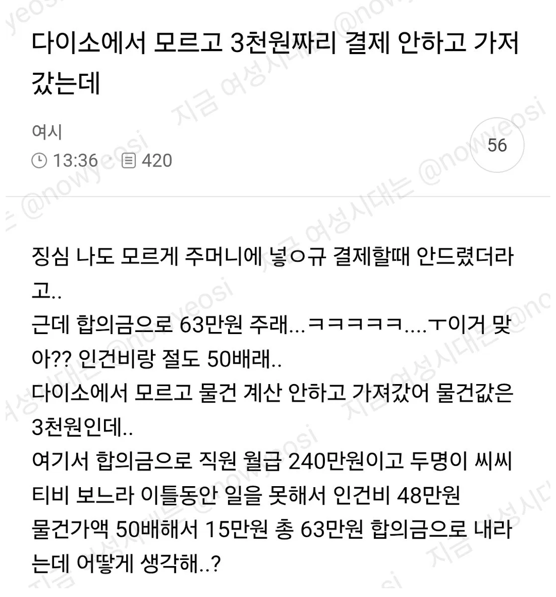
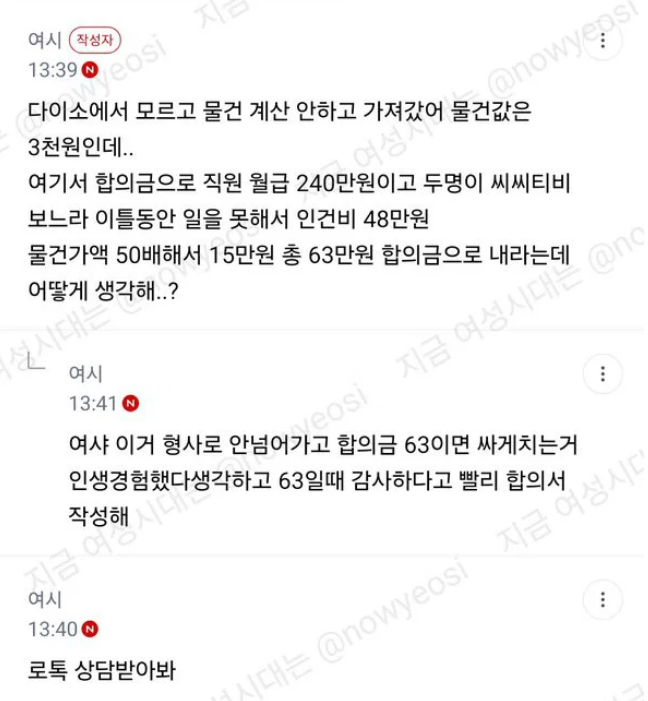
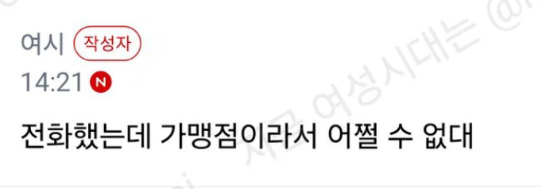
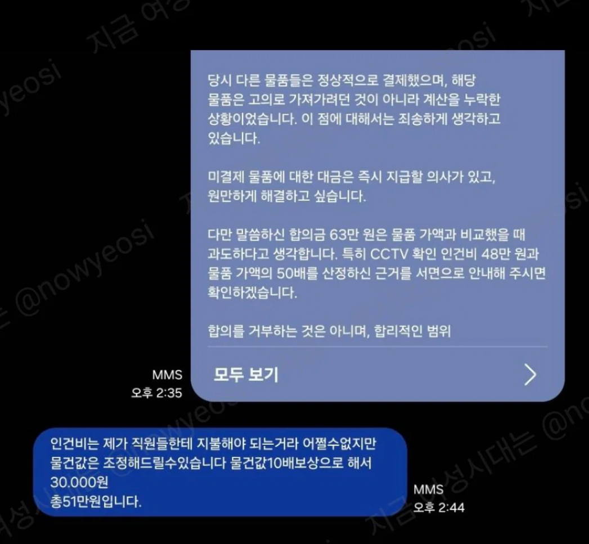
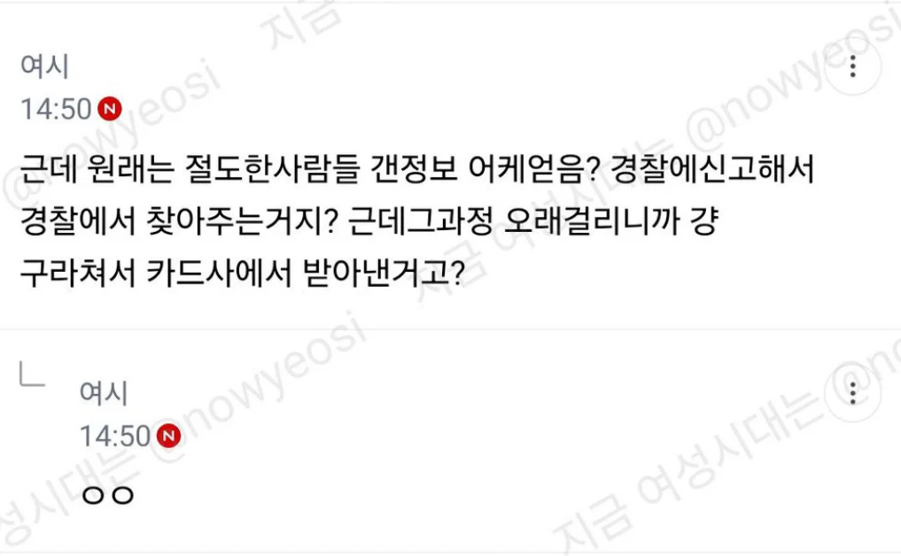
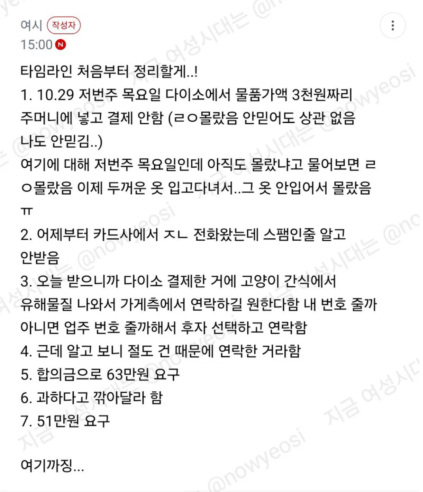
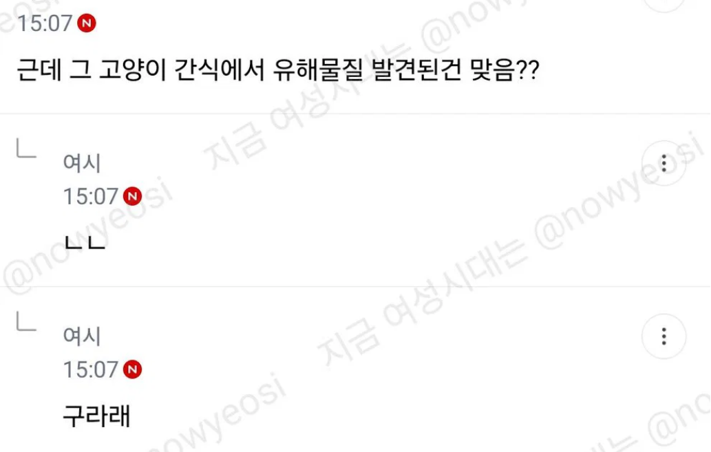
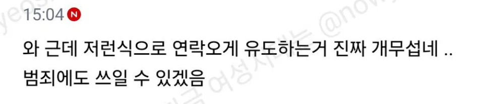
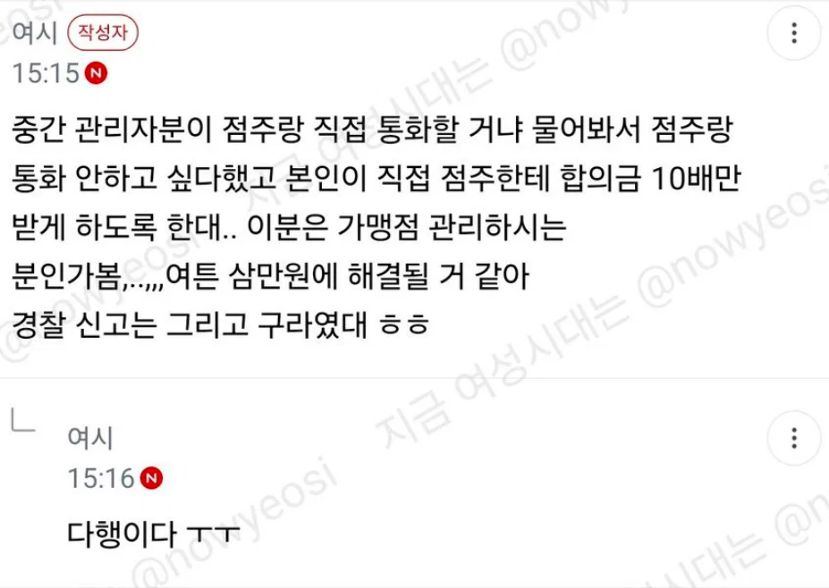
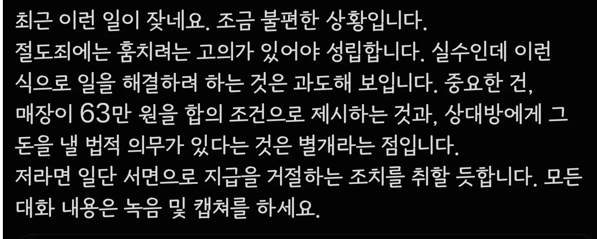
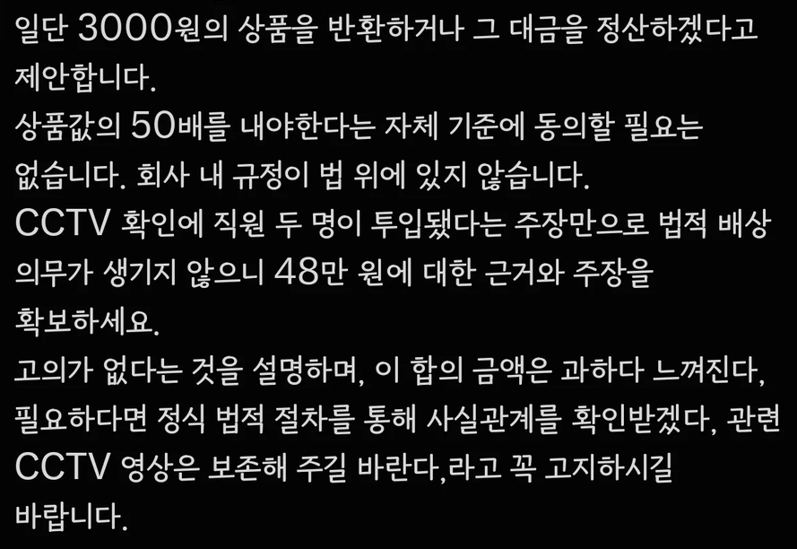
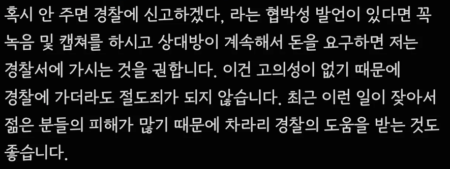
변호사 트윗
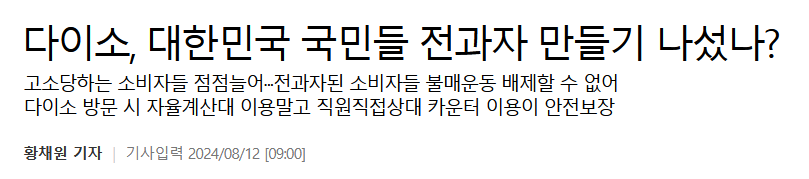
https://theqoo.net/square/4394812318












변호사 트윗

나도 손 가득 찼는데 바구니는 안 들고 왔을 때 주머니에 넣었다가 다 빼서 계산하는디
그러다 만에 하나 까먹고 계산 안하면 의도치 않은 절도가 되는거니까 뭐...
어떤 사람들은 만에 하나라도 절도 안할려고 바구니 가지러가는거임
처음엔 하나만 사려고 들어갔다가 자꾸 집다보니..
매장이 백화점크기도 아니고 다시 가서 바구니 가져와라
셀프계산대에서 너무 쳐다보는게 느껴져서 짜증났는데
이 글 보니 이해가 되네...
저게 한두놈이 아니라는거잖아.
옛날에 마트 보안 알바하는데 경보 울리길래 가서 알아보니까 할매 둘이 가방안에 뭔 잡화 조그만한거 몇가지 넣어놨길래 할머니 이거 계산 안 하신거 들고가시면 안 된다 그러니까 지가 일부러 넣었냐면서 되려 쌍심지 켜고 왜 엄한 사람 도둑년 만드냐고 지랄하던 거 생각나네 ㅋㅋ
마트 카트 끌고 다니면서 지 어깨에 맨 가방에 왜 계산도 안 한 물건을 쳐넣고 나온건지 누가봐도 도둑질할 의도가 다분한데 ㅋㅋㅋㅋㅋ
도둑은 맞는데 저런식으로 정보따고 연락하는게 더 큰 문제되는거 아니야?
오히려 저게 법으로 걸릴 것 같음ㅋㅋㅋ 절도죄는 내용에 나와 있는 대로 고의가 있어야 성립함
주작에 너무 감정 쏟지 마셔
도둑이 오죽 많으면 저러겠냐 싶긴 함.
어떤 다이소 매장은 절도 순찰 대상 구역이라고 경찰이 상시 출동한다고 계속 스피커에서 나오던데
손님 기분상하는거보다도 절도 예방하는게 더 중요할 정도로 피해가 크다는거니
저런것도 어쩔 수 없다고 봄...
저런일이 자주 생겨야 나오기전에 혹시 주머니에 잘못넣은거 아닌가 한번이라도 더 확인하지,
안그러면 어차피 1000원짜린데 내가 일부러 훔친것도 아니고 연락오면 1000원주면 땡이지뭐
하면서 합리화를 많이 하게 될테니깐...
도둑질을 하지마 시이바아알~~~~~~~~~~~~~~~~~~~~~~~
여시잖아ㅋㅋ 지들이 잘못해놓고 고소당하면 "고소피해자" ㅇㅈㄹ하는 ㅂㅅ들 집합소인데ㅋㅋ
근데 계산하기 빡쌔긴함
우리애 데리고 가끔가는데 학용품 과자 등등 사면 10품목이상인데
찍은거 또찍은거같고 안찍은것도 찍은거같고 뒤에 계산대기 줄은 한참서있고
다~~~찍은다음에 이거맞나 확인하면 씨부레 2번찍은게 가끔나옴
그럼 내가 그냥 빼면 쉬운데 다이소 계산기는 2번찍은거 빼기가 안됨 그럼 또 직원불러서 취소하고
다시시작 힘들긴하더라
계산대기줄은 길어봐야 너 오래걸리면 옆줄로 가겠지 천천히 계산해
그리고 품목수를 표시하는데 아니 내가 그걸 세면서 찍어야겠냐고...
안훔쳐가면 되잖아
범죄자들은 진짜 사고방식이 달라
휴먼에러로 돈벌기 ㅋㅋㅋ
ㄹㅇ몰랐음 이지랄하고 있네
그냥 도둑질 한걸 뭔 실수 어쩌고 저쩌고
씨발련들이 개소리여
실수인지 고의 인지 어떻게 입증할건데 병신년들이
능지가 어떻게 되먹은거지
나는 저 몰랐음. 깜박했음. 이게 존나 짜증나고 혐오스러움.
물론 사람인데 몰랐을 수 있고 깜박할 수 있지ㅡ근데 내가 짜증나는 상황은 항상 보면 되도않는 고집 부리며 니가 나한테 당연히 서비스해줘야하는 이유로 당당하게 사용해서 그런것같음
배상법의 기본이 배상은 손해의 100%한도내 인데
직원근무시간에 5000%배상은 누구 대가리에서 나온거지
잘 모르는 일반인들이야 겁부터 덜컥 먹고 합의금 뱉어내지
쫄지말고 법대로해라 소송 걸어라 하면 그만임.
무인상점이든 다이소든 뭐든
절도죄로 법정 가면 쟤들 본사 로펌이 뭐 해줄 것 같냐?
걍 점주가 본인 돈으로 법률비용 다 부담해야됨.
어차피 배상하라고 판결나도 끽해야 돈몇만원이 전부인데
고작 그거 얻자고 돈백만원 법률비를 지불한다?
그럴 인간이었으면 합의금 장사 시작도 안했겠지.
너무나도 당연히 절도죄 성립도 안되거니와
기소유예 나와도 걍 계속 항소하면 그만임
저런 씹탱이 새끼들은 본때를 맛봐야 저런 악질행위 그만두지
최종심 판결이 어떻든 무조건 민사까지 걸어서 법률비용도 뱉어내게 해야한다
물론 이건 니가 저새끼들이 고의로 무혐의인거 알고도 기소했다는걸 입증해야해서
승소하기 어렵긴 한데 줘팰라면 민사까지 걸어야함
편돌이 알바한번하면 실수안함 ㅇㅇ 지돈이 걸려있기에
실수로 주머니에 있는거 알았으면 나중에 되돌아가서 계산해야지
도둑새끼들이 큰소리는
실수로 주머니 ㅇㅈㄹ하네 ㅋㅋㅋㅋ 주머니에 계산도 안한걸 넣는다고? 상식선에서 이해가 안되는데 도둑년 꼴좋네